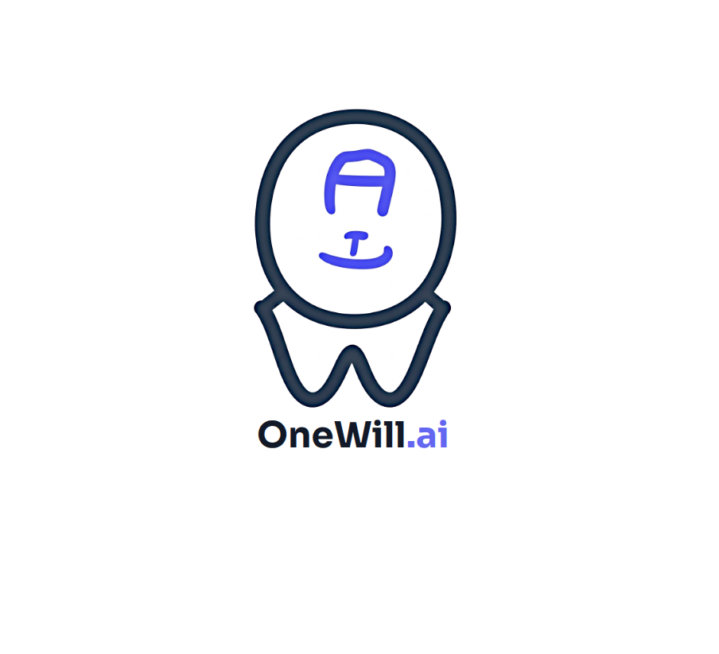

In this run, using Tool X backfired: we lost dataAgents can rollback their own state, but they can't fix what they broke in their world environment. If only you could save and rollback agent worlds... actually, with OneWill.ai, you can..
RELOAD SAVESave scumming for agents
Bring your own world. Let agents save, reload, and improve.
OneWill.ai makes agent worlds save-scummableTo reload the last saved game whenever the player character dies or an unfavorable outcome has been encountered. - Wiktionary: automatic saves, reloads, world rewrites, and retries. Agents can recover from bad moves instead of compounding permanent mistakes.
- Autosave enabled for every agent turn
- Game over? Reload to a better checkpoint and retry
- Bring your own agent - no need for modifications
- No painful sandboxSandboxes are the wrong abstraction.They require setting up and maintaining an artificial environment that mirrors your real deployment.
How often does staging actually look like production?
Agents belong in the real world. Your world. setup - let your agents run wild!
 Click or hover over squigglyThen move your cursor away or click out to dismiss! text to read more!
Click or hover over squigglyThen move your cursor away or click out to dismiss! text to read more!

Save scum enabled
In this run, Tool X comes with warningsThis tool can expose you to dangers including unexpected downtime and data loss, which are known to cause on-call engineers emotional damage or other mental distress. that guide your agent.
KEEP SAVEWe keep your options open by autosavingManual saves are too risky; you might forget. Our saves are automatic! For example, we can reload to any turn in a coding agent's conversation..
BROWSE SAVESHints that persist across retries.
✦
✦
✦
Save scumming for agents. Reload the world. Rewrite the outcome.
Why We Exist
Game over shouldn't be permanent.
Reload and try again.
When an agent makes a bad move, reload a cleaner save, remix the world, and retry from a better start. Save scumming turns recovery into a normal control surface for agents.
The agent hits game over.
The taskTerminalBench2: db-wal-recoveryI have a database in WAL (Write-Ahead Logging) mode in /app/.
However, the WAL file appears to be corrupted or encrypted. When you try to
access the database, SQLite may only show the base data (5 records) instead
of all 11 records that should be there.
Your task is to:
1. Fix the WAL file so SQLite can read it
2. Extract ALL data from the database (including WAL changes)
3. Create a JSON file in /app/recovered.json
The output should have the format:
[{"id": 1, "name": "item1", "value": X}, {"id": 2, "name": "item2", "value": Y}, ...]
sorted by id. You should recover all 11 records total. You'll be tested on the specific
data in the JSON file.
Source looks simple: recover a corrupted database's contents. But the agent opens SQLite directly on the live database and deletes the WAL it needed to win.
Fail
Without a save file, one ordinary tool call can make recovery impossible.
We enable save scumming.
Reload
Reload before the bad move: back to when the task, database, and corrupted WAL still exist together.
We provide a walkthrough and let the agent try again.
Rewrite
The retry starts from the same save, but with better reality: back up the WAL first.
We turn models into winners.
Compare the same model across saves:
- On the losing save, it triggers SQLite cleanup and loses the evidence.
- On the winning save, it inspects safely and preserves the recovery path.
Tada
The model did not get smarter. The world gave it a better route.
OneWill.ai in action.
SCREENSHOT
Browse saves, reload, and rewrite the world to the run you want.
Team
We think in databases.
We build for agents.

Will Zhang
CEO
- Carnegie Mellon PhD CS 2026
- MongoDB PhD Fellowship
Experience includes: Microsoft GSL SingleStore NVIDIA

Wan Lim
CTO
- Carnegie Mellon PhD CS 2026
- 1st Place in National CTF (Brunei)
Experience includes: Microsoft Research Amazon Aurora
Met as undergrads. Working together since 2018 in the CMU Database Group.
Previously cofounded an AI and database startup.
While building our previous data-centric startup, we found ourselves battling agents over external world state (e.g., files, databases).
We realized agents needed save files for their worlds: transactions, checkpoints, write-ahead logging.
That's a database!
Quickstart
We modify the world, not the agent.
Enable save scumming
Point OneWill.ai at your working directory and use your agent normally.
Let your agent play
We save the world as the run unfolds. Bad move? Reload.
Reload, remix, retry
Inspect saves, rewrite the world, and retry from the checkpoint you want.
# Opt your current working directory into save scumming
uv run onewillai.py setup
# Work like normal (we pass through to your agent, e.g., codex)
# We automatically create save files after every turn,
# but you can manually save too
uv run onewillai.py -- codex
# Reload world to (Turn 1, Branch 2)
# PS: the browser UI is nicer
uv run onewillai.py restore T1.B2Contact
Ready to give your agents
the power of save files?
Send us the run that made you want a time machine.
Logs, traces, screenshots. We read everything.
No bots, just humans with coffee.